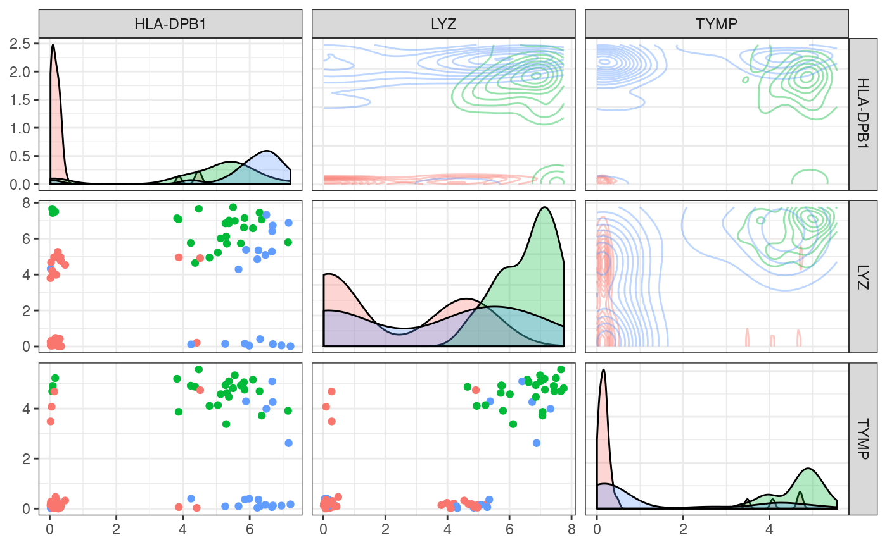

plot_flowstyle.Rmd
but using data from single cell rna-seq (seurat object …)
library(Seurat) library(sctree)
FindAllMarkers
plot_flowstyle(Seurat::pbmc_small, c("HLA-DPB1", "LYZ", "TYMP"))

plot_flowstyle(Seurat::pbmc_small, c("HLA-DPB1", "LYZ", "TYMP"), highlight_class = "1") #> Warning: Using alpha for a discrete variable is not advised. #> Warning: Using alpha for a discrete variable is not advised. #> Warning: Using alpha for a discrete variable is not advised.